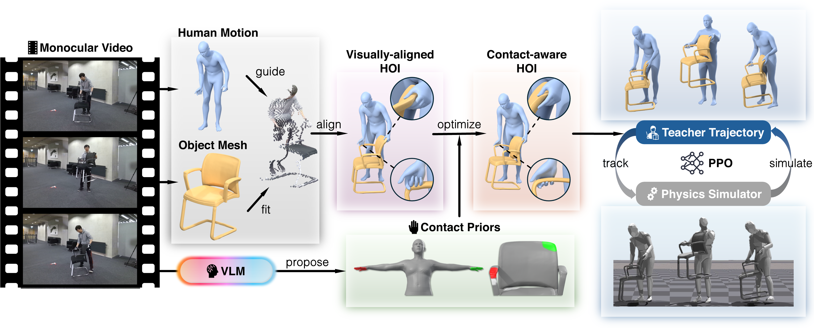

Recovering 4D human-object interaction (HOI) from monocular video is a key step toward scalable 3D content creation, embodied AI, and simulation-based learning. Recent methods can reconstruct temporally coherent human and object trajectories, but these trajectories often remain visual artifacts while failing to preserve stable contact, functional manipulation, or physical plausibility when used as reference motions for humanoid-object simulation. This reveals a fundamental interaction gap: HOI reconstruction should not stop at tracking a human and an object, but should recover the relation that makes their motion a coherent interaction.
We introduce HA-HOI, a framework for reconstructing physically plausible 4D HOI animation from in-the-wild monocular videos. Instead of treating the human and object as independent entities in an ambiguous monocular 3D space, we propose a human-first, object-follow formulation. The human motion is recovered as the interaction anchor, and the object is reconstructed, aligned, and refined relative to the human action. The resulting kinematic trajectory is then projected into a physics-based humanoid-object simulation, where it acts as a teacher trajectory for stable physical rollout.
Across benchmark and in-the-wild videos, HA-HOI improves human-object alignment, contact consistency, temporal stability, and simulation readiness over prior monocular HOI reconstruction methods. By moving beyond visually plausible trajectory recovery toward physically grounded interaction animation, our work takes a step toward turning general monocular HOI videos into scalable demonstrations for humanoid-object behavior.

Drag to orbit, scroll / pinch to zoom. Use the controls below the viewer to play, pause, scrub, and change playback speed.